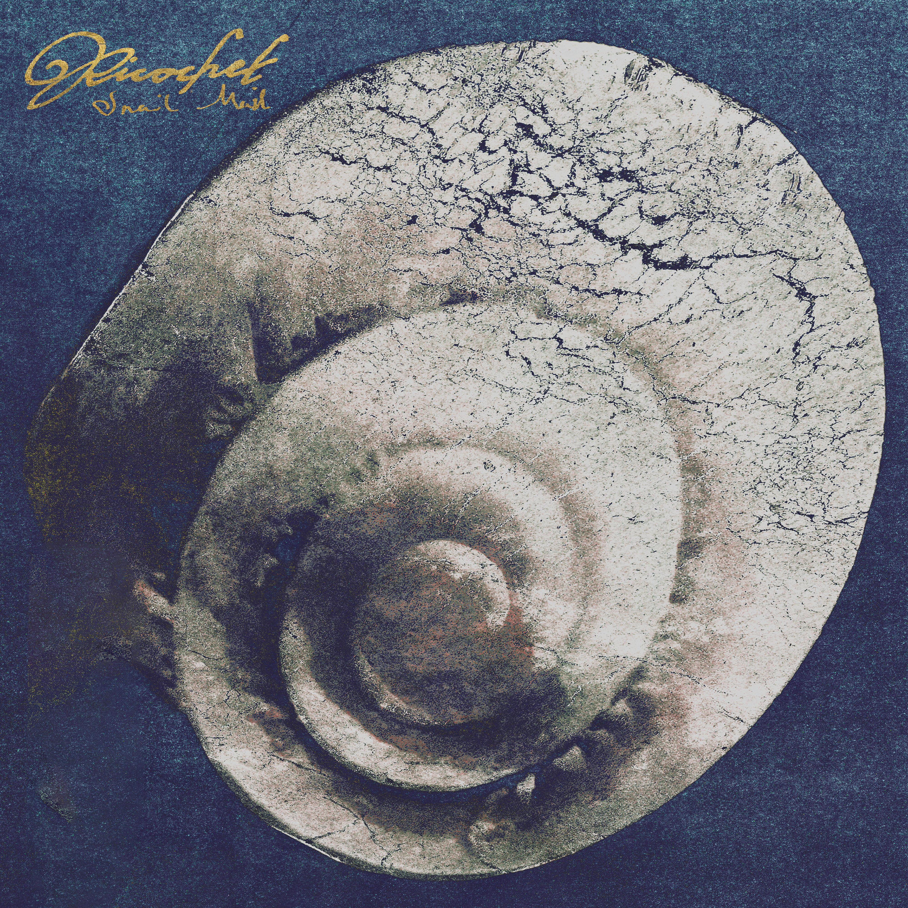
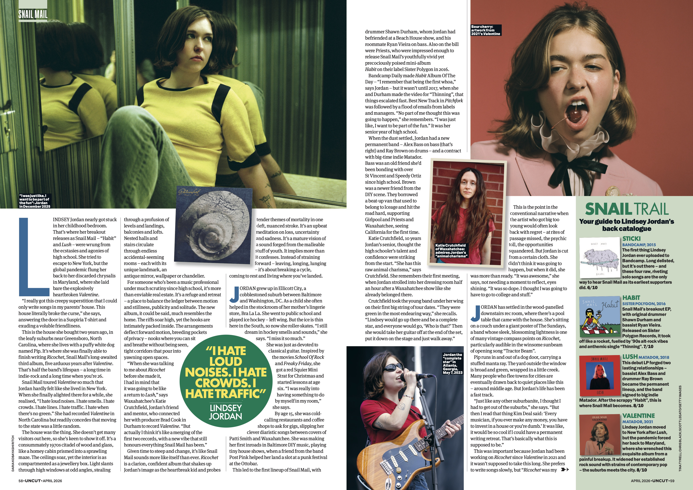
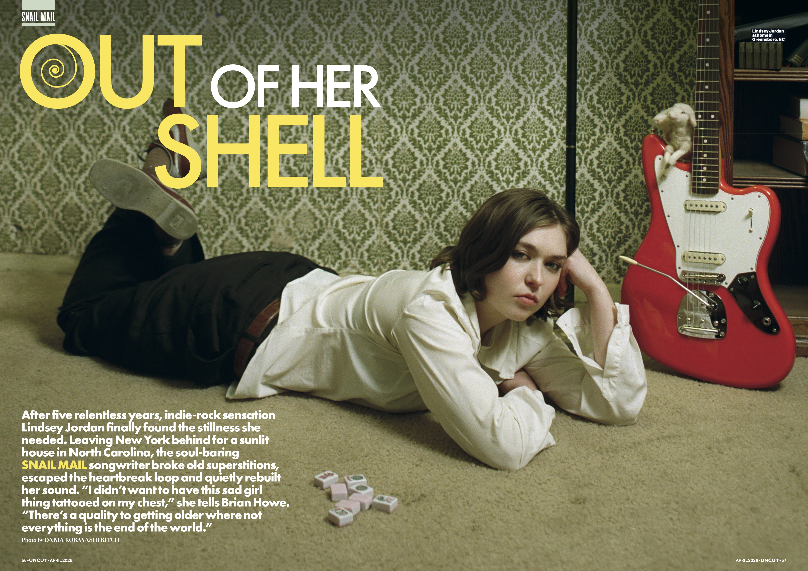
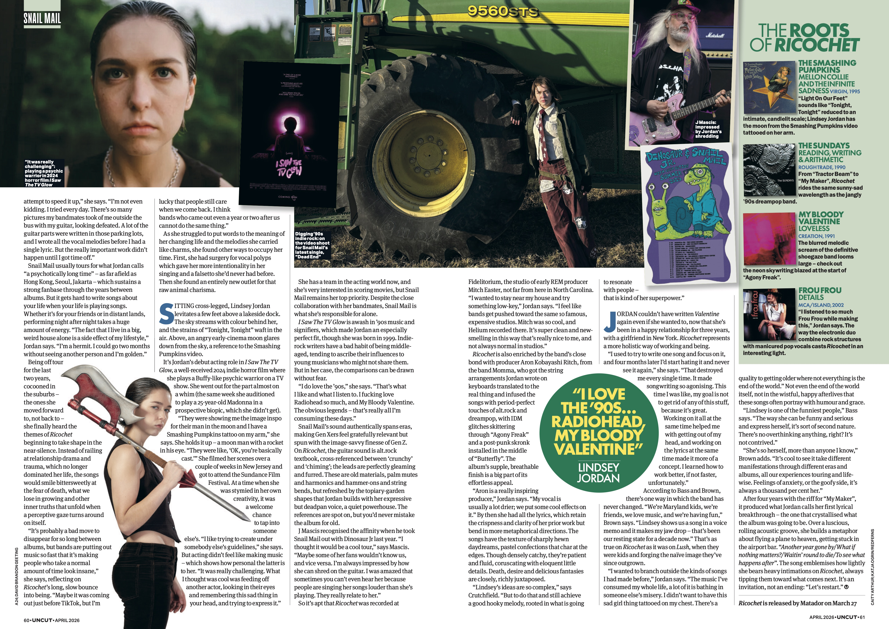

Ricochet Listening Party
Gimbab Records · March 24
앨범 소개글, 가사, 그리고 사인 엽서를 위한 퀴즈를 확인해보세요!
3월 27일 이후 배송 예정 · 김밥레코즈
Ricochet에서 Lindsey Jordan은 세대를 대표하는 송라이터로서의 자리를 확고히 한다. 언제나처럼 명료하고, 솔직하게. 시간은 흘렀지만 그녀는 여전히 예민한 영혼이다. 이번 앨범에서 그 날카로운 내면의 시선은 이전보다 훨씬 넓고 깊어진 멜로디와 화려한 현악 편곡에 단단히 맞닿아 있다.
"5년이 지났다. 그 사이 붙들고 있던 건 죽음, 우정, 그리고 어느새 멀어진 사람들에 대한 이야기."
Ricochet를 쓰는 동안 Jordan은 오랫동안 외면해온 것들에 집착하기 시작했다. 죽음, 그리고 그 이후에 대한 물음들. 11개의 트랙은 손가락 사이로 빠져나가는 삶에 대한 불안감으로 물들어 있으며, 동시에 깊이 사랑하는 것의 취약함에 관한 이야기이기도 하다. 결국 Ricochet는 — 내 작은 삶에 무슨 일이 일어나든, 세상은 계속 돌아간다는 것을 깨닫고 받아들이는 앨범이다.
2021년 Valentine을 들고 전 세계를 투어하기 전, Jordan은 성대 폴립 제거 수술을 받았다. 집중적인 언어 치료를 마친 뒤 그녀는 보컬리스트로서 더 자신감을 갖게 됐다. 불확실성에 관한 앨범임에도 불구하고, Ricochet에서 Jordan은 자신의 목소리를 이전과 다른 방식으로 다룬다. 그녀는 Jane Schoenbrun 감독의 인디 호러 I Saw the TV Glow에 배우로 데뷔했고, 뉴욕을 떠나 노스캐롤라이나 그린즈버러 인근에 정착했다. 올해 26살, 복슬복슬한 흰 강아지 한 마리와 함께 살고 있다.
앨범은 친구이자 퍼지 인디록 밴드 Momma의 베이시스트·프로듀서인 Aron Kobayashi Ritch와 함께 만들었다. R.E.M.의 프로듀서 Mitch Easter가 소유한 노스캐롤라이나의 Fidelitorium Recordings, 그리고 브루클린의 the Nightfly·Studio G에서 2025년 겨울 녹음했다. Jordan은 이 과정을 "동등한 목소리로 대화하는 느낌"이었다고 표현했다.
사운드적으로 Ricochet는 Snail Mail 디스코그래피의 자연스러운 다음 걸음이다. 2018년 데뷔작 Lush의 절제된 기타와 Valentine의 날것의 록 에너지 위에, Smashing Pumpkins의 가장 밝은 순간과 Radiohead의 브릿팝 시절, Catherine Wheel의 슈게이징, Ivy의 파워팝, Sunny Day Real Estate의 이모를 한데 녹여낸다.
앨범 커버에는 처음으로 Jordan의 얼굴이 없다. 대신 깊고 거친 블루 배경 위로 나선형 껍데기가 가득 찬다. 나선은 동시에 두 방향으로 움직인다. 안으로 감길수록 소멸에 가까워지고, 밖으로 열릴수록 무한의 가능성이 펼쳐진다.

UNCUT · April 2026
5년의 고단한 시간 끝에, 인디록의 감각 Lindsey Jordan은 마침내 자신에게 필요한 고요함을 찾았다. 뉴욕을 뒤로하고 노스캐롤라이나의 햇살 가득한 집으로 이사한 그녀는, 낡은 미신들을 떨쳐내고 상처의 굴레에서 벗어나 조용히 자신의 사운드를 다시 세웠다. "슬픈 여자애라는 낙인을 가슴에 새기고 싶지 않았어요"라고 그녀는 말한다. "나이가 들수록 모든 게 세상의 끝이 아니라는 걸 알게 되는 것 같아요."

UNCUT · April 2026
그녀가 Snail Mail로 돌아온 곳은 어린 시절 침실이었다. 그녀의 데뷔 앨범 Habit과 Lush는 황홀경과 고통의 소용돌이 속에서 탄생했다. 뉴욕으로 탈출하려 했지만, 전 세계적인 팬데믹이 그녀를 메릴랜드로 돌려보냈다. 그리고 그곳에서, 폭발적으로 가슴 시린 Valentine이 만들어졌다. "정말 기묘한 미신이 생겼어요. 부모님 집에서만 곡을 쓸 수 있다는 느낌이요." 문을 열었을 때 들어오는 건 Suspiria 티셔츠를 입은 친근한 외로움이었다. 이제 그녀는 2년 전 산 집, 노스캐롤라이나 그린즈버러 인근 집에서 Ricochet를 마무리했다. Pip이라는 복슬복슬한 흰 강아지와 함께.

UNCUT · April 2026
Ricochet는 진공 속에서 탄생하지 않았다. Smashing Pumpkins의 Mellon Collie and the Infinite Sadness, The Sundays의 Reading, Writing & Arithmetic, My Bloody Valentine의 Loveless, Frou Frou의 Details — 이 앨범들이 Ricochet의 DNA를 이룬다. "저는 90년대가 정말 좋아요. Radiohead, My Bloody Valentine." Jordan이 말했다. "제가 듣고 좋아하는 것들이에요. 전설적인 밴드들을 사랑하는 건 당연한 일이잖아요." Tractor Beam부터 Agony Freak까지, 그녀의 기타는 하늘 위로 솟구치는 네온 사인처럼 밤하늘을 가른다.
Snail Mail을 얼마나 알고 있나요?
높은 점수를 받으면 사인 엽서 추첨 기회가 주어집니다.